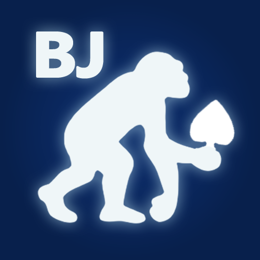

Sapiens Poker Logger
PWA
OFFLINE
FREE
ポーカーのハンド履歴をスマホで素早く記録。セッションと遠征の収支も自動で集計します。 登録不要・完全無料・オフラインでも動きます。
アプリを開くWorks — 個人開発の記録
YouTube で公開しているプレイシーンは、手で1コマずつ並べているわけではありません。 自分で作った仕組みが組み立てています。2026年2月から作りはじめて、いまも育てています。
ポーカーの1ハンドを動画にするのは、とにかく手間がかかります。 誰がいくら賭けて、どのカードが開いて、どこで勝負が決まったのか。 それを毎回、手作業で並べていました。
そこで、「その場で記録する」ところから「映像ができあがる」ところまでを ひと続きにする仕組みを作りました。いまは、卓で記録したハンドが、そのまま映像の形になって出てきます。
卓でスマホから、そのハンドを丸ごと残します。 入力が速いことがすべてなので、ここは何度も作り直しました。
記録を、映像を組み立てるための設計図に変換します。 ここの作りが、後からテンポを調整できるかどうかを決めます。
After Effects の中に、シーンが自動で組み上がります。 あとはテンポを整えて書き出すだけ。
最初は「撮影した動画をAIに見せて、カードを自動で読ませる」ことを考えていました。 3日試して、実用に届かないと分かって諦めました。
いま思えば、これが一番大きな判断でした。 自動で読み取らせるのをやめ、人が最短で記録できる形を作る側に回りました。 以降の作りは、すべてここから決まっています。
仕様を紙の上で決めるのではなく、実際に映像を作って、再生して、おかしいところを直す。 これを12回くり返したところで、いまも使っている土台ができました。
自分の動画で使いながら直していくうちに、記録する側だけで3回作り替わりました。 その完成形を、誰でも無料で使える形で公開しています。 着手から38日後のことでした。
自動化でいちばん時間がかかるのは、例外です。 滅多に起きない状況をどう見せるか。ここに5か月かかりました。 直した記録を見返すと、すべて実際に動画を作っていた日に集中しています。
同じ考え方で、ブラックジャックの記録と映像化に取りかかっています。 ポーカーで半年かかった部分が、今回は数日で立ち上がりました。
もともとプログラマーではありません。映像を作る人間が、自分の作業を減らすために書いています。 フレームワークもビルド環境も使わず、1枚のHTMLで完結させているのはそのためです。
ポーカーのハンド履歴をスマホで素早く記録。セッションと遠征の収支も自動で集計します。 登録不要・完全無料・オフラインでも動きます。
アプリを開く
1ハンドを順番に追いながら、正確に記録するための入力ウィザード。 ボードとホールカードから役を自動で判定し、勝敗まで出します。
アプリを開く
ブラックジャックの記録を、あとから見返せる形に整えるツール。 カジノでの実戦記録を映像にするために作っています。公開は未定です。
エンジョイポーカーYouTuber。海外のカジノを旅しながらポーカーを打ち、その様子を動画にしています。 Sapiens & Co. は、その制作の中で生まれた道具を公開しているプロジェクトです。
youtube.com/@ChimpanPoker